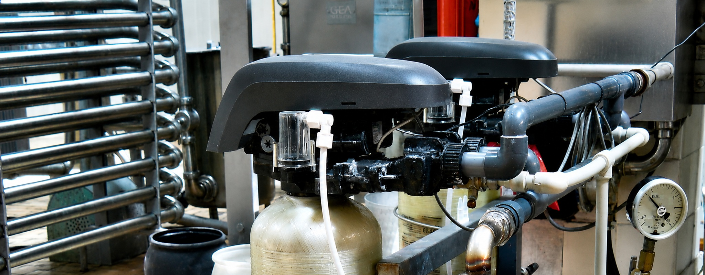
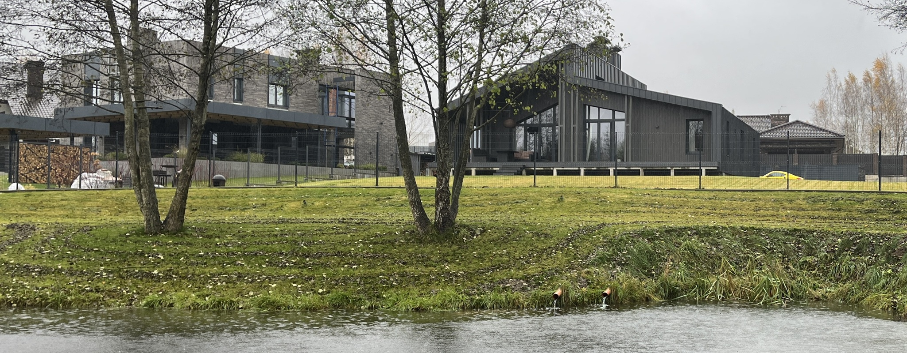
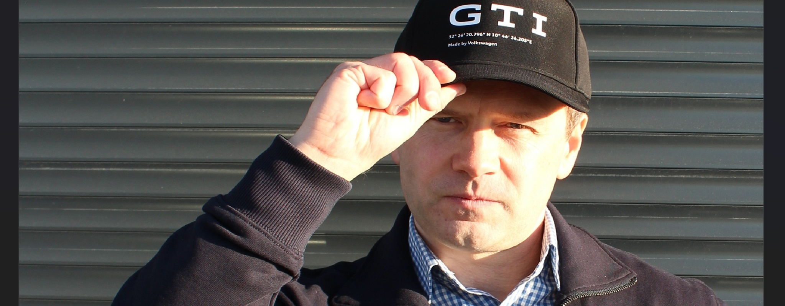
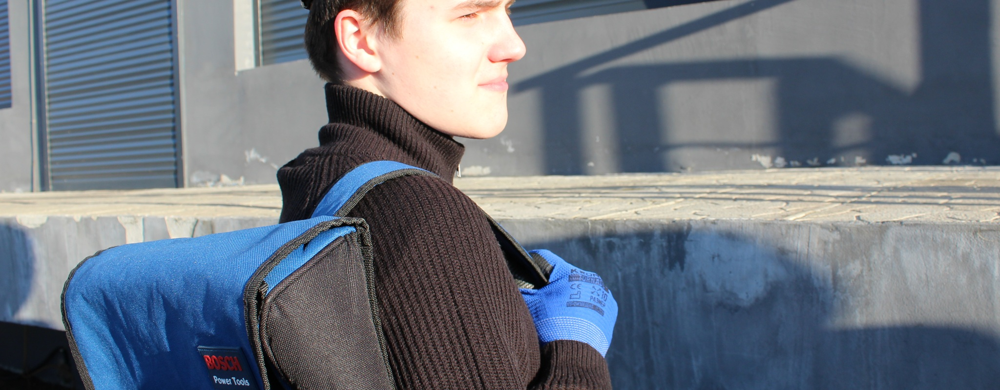

Bringen Sie
den echten Fall.
Wir suchen Betriebe mit konkreten Wasserfragen und Fachanbieter, die die ersten Pilotfälle mitgestalten wollen.
Pilotpartner werden
Wasserwiederverwendung für den deutschen Mittelstand
Sie denken langfristig für Ihren Betrieb.
Welchen Platz hat Wasser in Ihrem Zukunftsplan?
REWASSER entwickelt die Plattform, mit der Unternehmen Wasserwiederverwendung vorbereiten: den eigenen Fall klären, Unterlagen ordnen, passende Fachpartner finden.
Meinen Betrieb ins Gespräch bringen01 / DIE FRAGE FÜR MORGEN
Ihr Betrieb denkt in Generationen.
Denkt Ihr Wasserkonzept genauso weit?
Ob sich Wasserwiederverwendung lohnt, hängt von Verbrauch, Wasserqualität, Gebühren und dem Aufwand für die Aufbereitung ab. Diese Grundlagen gehören vor eine Investitionsentscheidung.
Welche Mengen fallen an? Welche Qualität wird benötigt? Und welche Anforderungen gelten an Ihrem Standort? Mit diesen Fragen beginnt ein belastbarer Plan.
Die EU-Wasserresilienzstrategie strebt bis 2030 eine Verbesserung der Wassereffizienz um 10 % an.
Zur EU-Strategie ↗Die Nationale Wasserstrategie richtet den Umgang mit Wasser auf 2050 aus. Wiederverwendung gehört dazu.
Zur Nationalen Wasserstrategie ↗Strategische Ziele sind keine pauschale Recyclingpflicht für jeden Betrieb. Welche Anforderungen gelten, hängt von Standort, Nutzung und Genehmigung ab.
02 / KOSTEN UND POTENZIAL
50.000 € Jahreskosten.
20 % weniger wären 10.000 € im Jahr.
Das ist das voreingestellte Beispiel. Passen Sie Kosten und angenommene Reduktion an Ihren Betrieb an. Die Rechnung zeigt einen möglichen Bruttospielraum, keine Rendite.
Reines Rechenbeispiel. Keine Einsparprognose: Investitionen, Energie, Wartung und fixe Gebühren sind nicht berücksichtigt. Die technische Machbarkeit ist gesondert zu prüfen.
03 / DER ANSATZ
Sie führen Ihren Betrieb.
REWASSER soll den Weg zum passenden Wasserprojekt kürzer machen.
Eine B2B-Software für die Vorbereitung und Begleitung von Wasserprojekten. Vom ersten Problem bis zum fundierten Gespräch mit dem geeigneten Anbieter.
Geschlossenes MVP · Pilotphase in Vorbereitung
Wasserart, Mengen, benötigte Qualität und die Nutzung am Standort erfassen. Daraus entsteht eine konkrete Beschreibung für das Fachgespräch.
Behördliche Schreiben, Analysen und vorhandene Anlagendaten ordnen. Offene fachliche Fragen und fehlende Unterlagen sichtbar machen.
Passende Fachpartner und vergleichbare Praxisfälle erschließen. Bessere Grundlagen für Ihre Investitionsentscheidung.

UNSER ANSPRUCH
Wasser so lange wie sinnvoll im Kreislauf halten.
Für den Betrieb. Für den Standort. Für die nächste Generation.
04 / DER MENSCH DAHINTER


Mein Sohn Maksim unterstützt mich bei der Analyse großer Datenmengen und bei der täglichen Projektarbeit.
Wassertechnik verstehen.
Software bauen. Umsetzung ermöglichen.
Ich bin Kiryl Asmalouski. Mein Hintergrund liegt in Wasserver- und Abwasserentsorgung, technischer Projektpraxis und Softwareentwicklung. Mein einschlägiger Hochschulabschluss wurde in Deutschland durch die KMK bewertet.
Mit REWASSER verbinde ich diese Erfahrungen. Mein Ziel: Unternehmen sollen schneller verstehen, welche Wasserlösung zu ihrem Betrieb passt — und mit wem sie sie angehen können.
Sprechen Sie direkt mit mir ↗05 / GEMEINSAM AUFBAUEN
Gesucht: Menschen, die aus einem frühen Produkt einen deutschen Wasser-Hub machen.
Für Pilotprojekte, den Aufbau der geplanten REWASSER GmbH und eine operative Heimat in Deutschland. Gesucht wird ein Standort mit Zugang zu Pilotbetrieben und Unterstützung beim Aufbau.
Für Produktreife, erste dokumentierte Pilotfälle, den Aufbau des Anbieternetzwerks und die deutsche Betriebsbasis.
Ziel für den Aufbau.Wir suchen Betriebe mit konkreten Wasserfragen und Fachanbieter, die die ersten Pilotfälle mitgestalten wollen.
Pilotpartner werdenGemeinsam Produkt, Pilotnachweise und ein tragfähiges Geschäftsmodell entwickeln. MVP-Voransicht und Aufbauplan im Gespräch.
Investment besprechenWir suchen einen Standortpartner mit Zugang zum Mittelstand, passenden Netzwerken und konkreter Unterstützung beim Aufbau.
Standort anbieten3–5 Pilotfälle oder Absichtserklärungen
10–20 qualifizierte Anbieter
6–9 Monate als Zielhorizont nach Finanzierung
06 / IHRE ENTSCHEIDUNG
Der erste Schritt ist ein Gespräch.
Kein Anlagenkauf. Kein Abo.
Schreiben Sie, was Sie einbringen möchten.
Kiryl Asmalouski liest Ihre Nachricht persönlich.
WAS BRINGT SIE ZU REWASSER?
Ein konkretes Wasserproblem in Ihrem Betrieb? Nennen Sie Branche, Standort und die Frage, die Sie lösen möchten.
Gespräch per E-Mail starten kontakt@rewasser.deÖffnet Ihr E-Mail-Programm. Bitte zunächst nur eine kurze Beschreibung, keine vertraulichen Betriebsunterlagen senden.